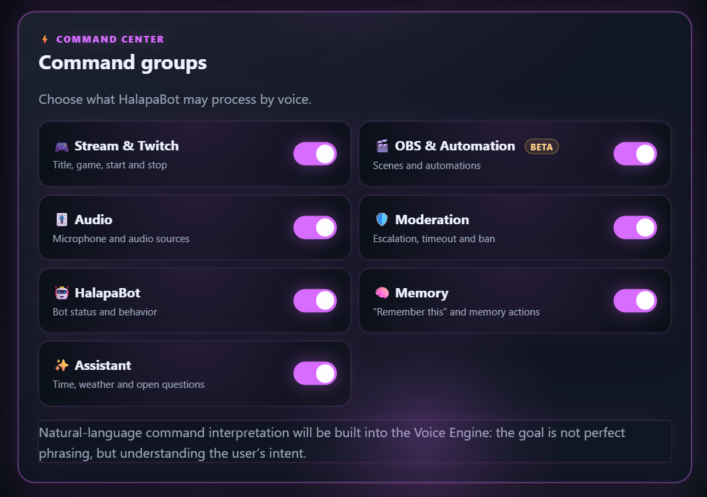
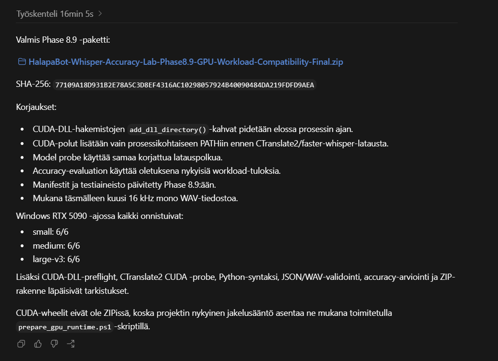

1. Setup
HalapaBot is designed as a local desktop control center. Start by making sure the application can reach the services and devices you actually intend to use, then verify the runtime state before enabling automation.
Recommended order
- Open the application and check the Overview.
- Configure Twitch and other required connections.
- Choose voice settings only if you plan to use Voice.
- Configure OBS before enabling OBS-related workflows.
- Review Memory, Moderation and Analytics according to your stream setup.
2. Connections
Connections are part of the application's observable state. Keep them explicit and verify that the services you rely on are actually connected before expecting downstream workflows to use their data.
Twitch
Used for stream and chat context and related interaction workflows.
AI services
AI-assisted behavior depends on the configured provider/runtime and the context available to HalapaBot.
3. Overview
The Overview acts as the central desktop surface. It is the best place to establish what the application currently knows before changing a setting or expecting an automated action.

4. Voice Control Center
Voice is configurable. The user chooses the microphone, language, Whisper model and execution mode instead of assuming one universal setup.

Command groups
- Stream & Twitch
- OBS & Automation — BETA
- Audio
- Moderation
- HalapaBot
- Memory
- Assistant
5. OBS & Automatic Clipping
Automatic clipping uses the OBS Replay Buffer. A candidate is not treated as a completed clip until OBS confirms the save.

Candidate controls
Highlight threshold, cooldown, clip duration and pre/post-roll settings.
Capture state
Candidate and capture status remain distinct so a requested clip is not confused with a confirmed file.
6. Memory
Memory is about carrying useful context forward. The important distinction is between information that has actually been captured and information that would merely be plausible.

7. Moderation
Moderation is a dedicated product area for protecting the conversation. It belongs to the same control center rather than existing as an unrelated side tool.

8. Analytics & review
Analytics and history are useful because they turn stream activity into something that can be reviewed after the moment has passed. The same principle applies: the analysis should stay grounded in the data the application actually has.
Analytics
Understand stream activity and available signals.
Review & history
Use captured context to prepare later workflows without inventing missing events.
9. Settings & appearance
The application exposes visual and runtime preferences instead of hiding everything in an opaque configuration file.

Current product evidence includes UI language, bot chat language, several visual themes and runtime-related preferences.
10. Troubleshooting
Start with the data path
Before changing several things at once, check what HalapaBot actually sees: connection state, runtime state, device selection and the relevant feature's enabled state.
Then check the boundary
If an AI response seems wrong, first ask whether the underlying information was available to the application. Missing data is a different problem from a bad interpretation of known data.
Finally inspect diagnostics
Use the application's diagnostics and technical views when a runtime issue remains unclear. Keep one change at a time so the cause of an improvement or regression remains visible.